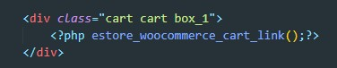

Корзина
Ссылка на карзину
по сути это обыкновенная ссылка которая должна вести по пути - echo esc_url( wc_get_cart_url() );
Что бы добавить к корзине отметку о количестве товара нужно:
В папке темы woocommerce - includes создаем файл wc-functions-cart.php
Код
<?php
if ( ! function_exists( 'estore_woocommerce_cart_link_fragment' ) ) {
add_filter( 'woocommerce_add_to_cart_fragments', 'estore_woocommerce_cart_link_fragment' );
function estore_woocommerce_cart_link_fragment( $fragments ) {
ob_start();
estore_woocommerce_cart_link();
$fragments['a.cart-contents'] = ob_get_clean();
return $fragments;
}
}
function estore_woocommerce_cart_link() {
?>
<a class="cart-contents w3view-cart" href="<?php echo esc_url( wc_get_cart_url() ); ?>"
title="<?php esc_attr_e( 'View your shopping cart', 'estore' ); ?>">
<span class="count"><?php echo wp_kses_data( WC()->cart->get_cart_contents_count() ) ;?></span>
<i class="fa fa-cart-arrow-down" aria-hidden="true"></i>
</a>
<?php
}
if ( ! function_exists( 'estore_woocommerce_header_cart' ) ) {
/**
* Display Header Cart.
*
* @return void
*/
function estore_woocommerce_header_cart() {
if ( is_cart() ) {
$class = 'current-menu-item';
} else {
$class = '';
}
?>
<ul id="site-header-cart" class="site-header-cart">
<li class="<?php echo esc_attr( $class ); ?>">
<?php estore_woocommerce_cart_link(); ?>
</li>
<li>
<?php
$instance = array(
'title' => '',
);
the_widget( 'WC_Widget_Cart', $instance );
?>
</li>
</ul>
<?php
}
}
Что бы отобразить нашу кнопку с корзиной в html пишем вот такой код
